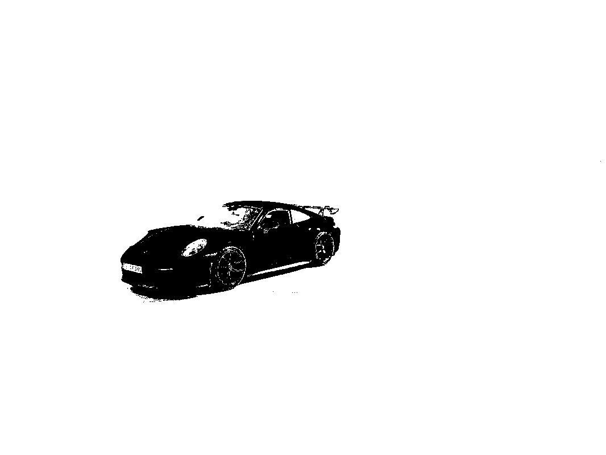
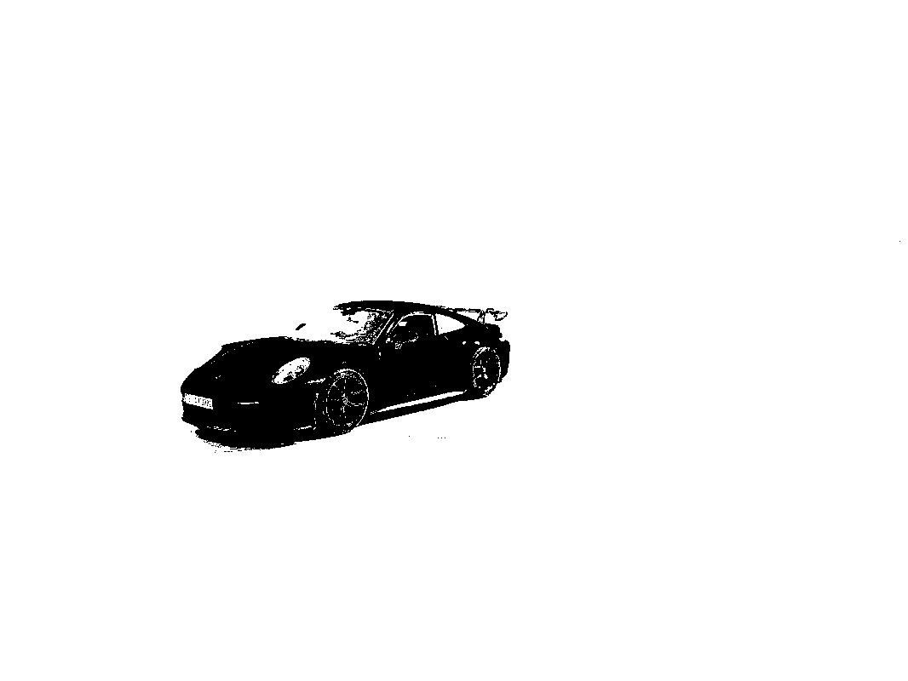

Overview
As part of the Machine Learning lecture at RWTH Aachen University, we were introduced to the Mixture of Gaussians (MoG) algorithm.
To deepen my understanding of this algorithm, I decided to implement a foreground/background segmentation method using MoG on my own images.
Skills Leveraged
- Python
- Computer Vision
- Scikit-Learn for Machine Learning
- OpenCV, Numpy
- Git/GitHub
Demonstration
 
